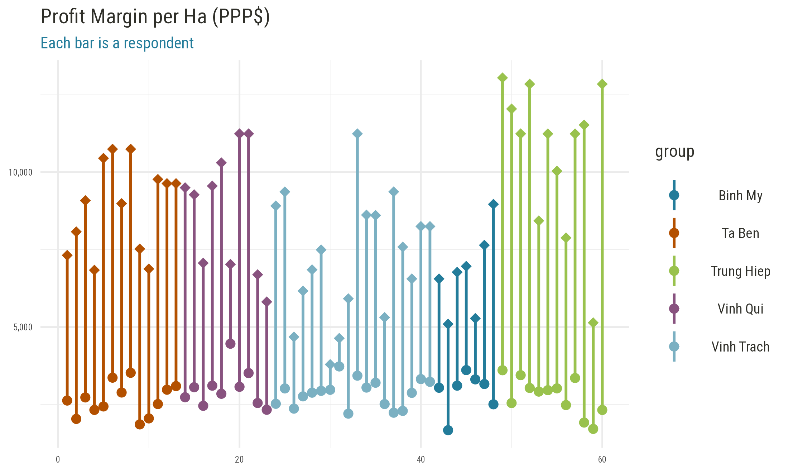

Vietnam
Field work in Vietnam consisted of a qualitative assessment with focus group discussions and quantitative surveys. We first look at the consolidated survey results.
Notes:
- 1 Int’l $ = 7,473.67 VND (Vietnamese Dong) using 2020 World Bank PPP conversion rates (1 Int’l $ = 1 USD)
- Focus crop = rice
- Transportation costs are lumped into the cost of pesticides, fertilizers and harvesting.
- Labor costs are per hectare
- Inspection and certification fees are per farm (total fees for a single season). Only farmers who sell to seed centers or seed companies do incur these marketing costs.
Survey Codebook
There are 21 variables and 60 observations in this set. A detailed codebook is shown below.
| code | label | type | unit | constructed |
|---|---|---|---|---|
| hhid | Code | character | uid | FALSE |
| age | Age | numeric | years | FALSE |
| gender | Sex | character | class | FALSE |
| group | Group | character | class | FALSE |
| adm1_nm | Province | character | class | FALSE |
| member_years | How long have you been a member of this group? | numeric | years | FALSE |
| seed_ha_lcu | Cost seed per ha (VND) | numeric | lcu/ha | FALSE |
| fert_ha_lcu | Cost of fertilizer per ha (VND) | numeric | lcu/ha | FALSE |
| pest_ha_lcu | Cost of pesticide per ha (VND) | numeric | lcu/ha | FALSE |
| tran_ha_lcu | Cost of transport per ha (VND) | logical | lcu/ha | FALSE |
| labor_ha_lcu | Labor cost (VND) | numeric | lcu/ha | FALSE |
| cert_lcu | Inspection / certification Fees (VND) | numeric | lcu/farm/season | FALSE |
| labl_kg_lcu | Labelling costs per kg (VND) | numeric | lcu/kg | FALSE |
| pckg_kg_lcu | Packaging costs per kg (VND) | numeric | lcu/kg | FALSE |
| mark_kg_lcu | Other marketing costs? (VND) | numeric | lcu/kg | FALSE |
| yield_ha_kg | Estimated Yield (kg/ha) | numeric | kg/ha | FALSE |
| sales_kg_lcu | Selling price of seed per kg (VND) | numeric | lcu/kg | FALSE |
| sales_ha_kg | How many kg were sold in the season? | numeric | kg/ha | FALSE |
| margin_ha_lcu | What was your expected gross-margin? | numeric | lcu/ha | FALSE |
| costs_ha_lcu | Total production cost | numeric | lcu/ha | FALSE |
| sales_ha_lcu | Gros sales | numeric | lcu/ha | FALSE |
| group_year | Year the group was established | integer | year | TRUE |
| group_size | Members in the group | integer | members | TRUE |
| soil_type | Primary soil type | character | class | TRUE |
| seasons | Number of seasons per year | integer | seasons/year | TRUE |
| irrigated | Level of irrigation | character | class | TRUE |
| market_access | Market access | character | class | TRUE |
| ttrade | Presence of transboundary trade | logical | true/false | TRUE |
| costs_ha_lcu_imp | Total costs (imputed) | numeric | lcu/ha | TRUE |
| sales_ha_sh | Gross sales as share of tpc | numeric | share | TRUE |
| sales_ha_ppp | Gross sales in PPP equivalent | numeric | ppp/ha | TRUE |
| margin_ha_sh | Margin as share of tpc | numeric | share | TRUE |
| margin_ha_ppp | Margin in PPP equivalent | numeric | ppp/ha | TRUE |
Recode variable names.
Additional recodes of categorical variables.
Data Enrichment
Below we append some of the information that was recorded at the group level.
Spatial Covariates
Using the community GPS coordinates we also suggest to enrich this dataset with additional biophysical and geospatial variables, e.g.:
- Agroecological zone
- Travel time to nearest market
- Population density
- Last season total rainfall
- Last season heat stress days (if any)
[pending GPS coordinates]
Constructed Variables
We check farmer-reported total costs costs_ha_lcu against the sum of individual cost line items.
## Min. 1st Qu. Median Mean 3rd Qu. Max.
## 0 0 0 0 0 0There is no discrepancy between the 2 quantities, so we can assume that total costs are constructed per the formula above. No error was found.
Further we construct total sales sales_ha_sh and profit margin margin_ha_sh as percentages of total costs per hectare, and in PPP terms sales_ha_ppp and margin_ha_ppp to allow for cross country comparisons.
Finally we normalize all farmer cost line items into a “long” table hh_prod_cost for charting.
Note that in the current survey we are missing farm sizes (or planted acreage), so we can not directly study the effect of farm size on the per-unit costs of production and yields, or look at potential scale effects. We can however measure partial factor productivity as the ratio of total agricultural output to total production input (it is only partial here because the rental cost of land, land preparation costs, irrigation costs, and farm implements are missing). Furthermore we can measure a farmer’s technical efficiency along the current production frontier.
Descriptive Statistics
Respondent Characteristics
Seed Production Costs
We first look at the general distribution of production costs and sales receipts across farmer groups.
Profit Margins

## `stat_bin()` using `bins = 30`. Pick better value with `binwidth`.